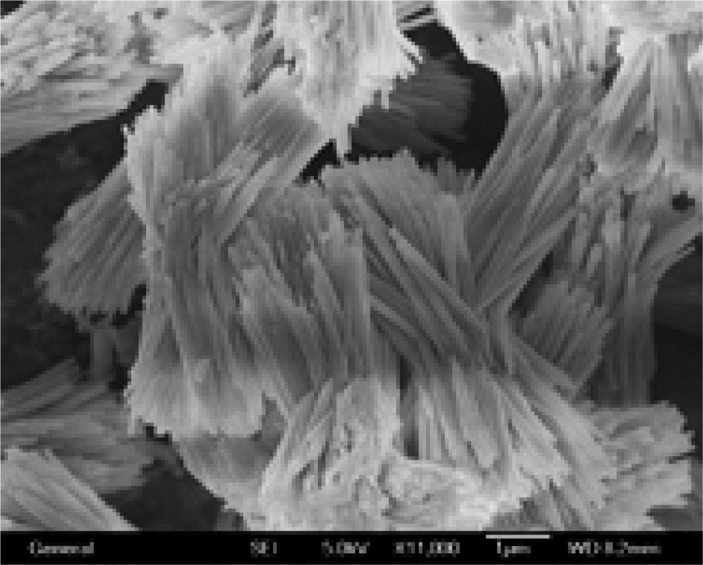
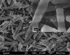
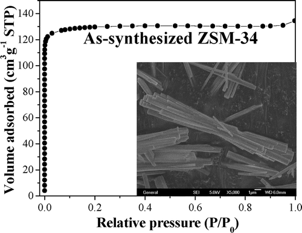
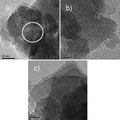

Research interests in catalytic materials group are mainly focused on following:
(1) Synthesis, charactrization and catalysis test of microporous zeolites;
(2) Synthesis, charactrization and catalysis test of mesoporous zeolites;
(3) Synthesis, charactrization and catalysis test of porous polyligand catalysts;
(4) Highly efficient conversion of biomass;
(1) Synthesis, charactrization and catalysis test of microporous zeolites
Crystalline zeolites with pore sizes typically at 0.4-1.2 nm are one of the most useful sorbents, catalysts and ion-exchange materials in industrial processes due to their large surface area and adsorption capacity, uniform and intricate channels, high thermal and hydrothermal stabilities, and well-defined micropores.
Notably, modern synthesis methodologies for preparing zeolites or zeolite-like materials typically involve the use of organic molecules that direct the assembly pathway and ultimately fill the pore space. The use of organic template has obvious disadvantages such as relatively high cost of organic template and the harmful gas produced during the removal of the template normally carried out by high temperature combustion.
Recent yeras, we have developed several organotemplate-free routes for synthesizing zeolites such as ZSM-5, Beta, ZSM-34, ECR-1 etc, which normally require the presence of organotemplates in the synthesis. Organotemplate-free routes for synthesizing zeolites are of great potential industrial applications due to the low-cost, energy-saving, emission-reduction and consequent huge economic benefits.
 |
Organic Template Free Synthesis of Aluminosilicate Zeolite ECR-1 ---Chem. Mater., 2006, 18 (12), 2775–2777 |
 |
Organic Template-Free Synthesis of ZSM-34 Zeolite from an Assistance of Zeolite L Seeds Solution --- Chem. Mater. , 2008, 20 (2), 357–359 |
 |
|
 |
Organotemplate-Free and Fast Route for Synthesizing Beta Zeolite |